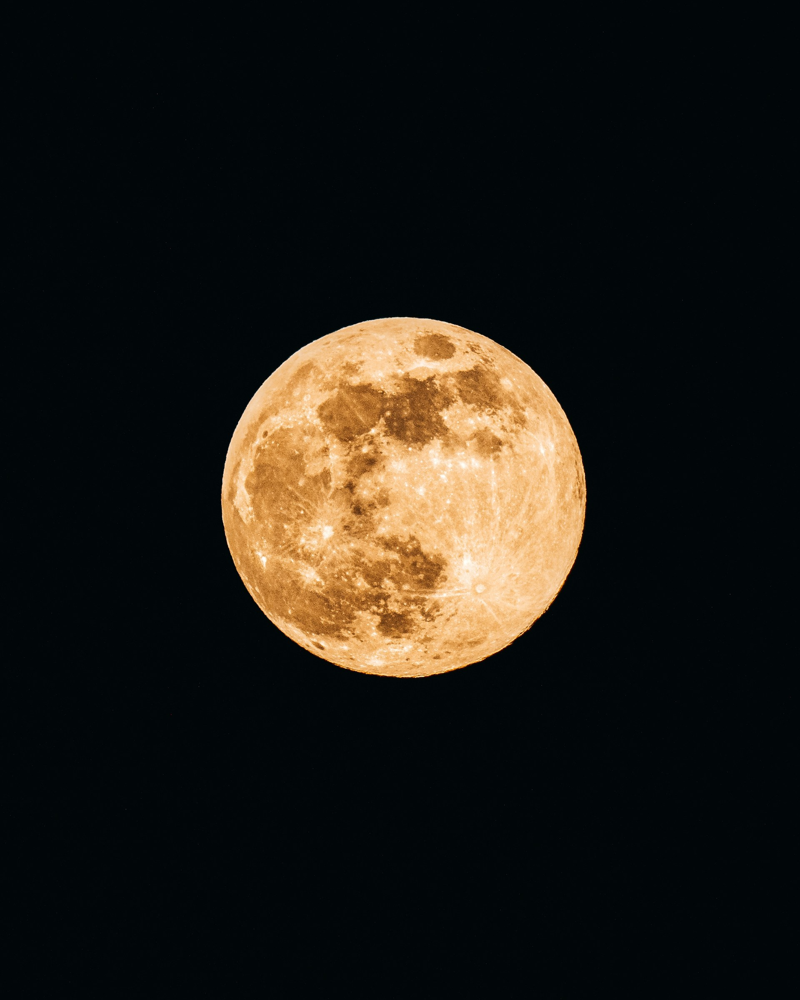

-
Фритрек и нулевой спринт: Подготовка к работе
</html>Это было самое начало пути. На этом этапе важно было проникнуться основами и настроиться на учёбу. И, возможно, подумать, как новые знания могут повлиять на ваше будущее.
Для меня самое сложно это было просто начать. Начать свой путь...
Ведь у самурая нет цели, есть только путь🥷🏻 -
1 спринт: Я — чистый лист
</html>На первых этапах мы работали со страхами и сомнениями, которые часто испытывают новички. Один из них — страх перед чистым листом. Это, конечно же, намного сложнее, чем боязнь куска бумаги. Часто за этим ощущением скрываются более глубокие вопросы: с чего начать? а вдруг будет слишком сложно? что, если я не справлюсь?
Было интрересно воспомнить то, чем раньше занимался!
-
1 спринт: А если не получится?
<css>Первый проект — позади! Но это всё ещё самое начало пути. Радость могла быстро померкнуть и смениться ожиданием провала. Или вы, наоборот, могли вдохновиться успехами и поверить в себя.
Начало было положено, и даже успешно. Все больше нравилось этим заниматься.
-
2 спринт: Погоня за идеалом
<desigions> На этом этапе вы уже достаточно разбирались в основах вёрстки, чтобы понять, как много ещё впереди. Вы могли попытаться погнаться за идеалом и понять, что он недостижим. А, может, вы вовсе и не подвержены перфекционизму и вместо того, чтобы сделать идеально, старались просто сделать.
Новые знания пора получить, чем больше впитаешь, тем больше получишь!!!
-
2 спринт: О тех, кто рядом
</care>Всё это время вы были не одиноки (хотя, возможно, иногда и чувствовали, что одни против целого мира). Вас окружали одногруппники, команда сопровождения и просто близкие люди, которым можно пожаловаться, если очередной макет просто так не поддавался. Осваивать что-то новое легче, когда рядом есть единомышленники, не правда ли?
Есть итог и даже не плохой, но есть к чему стремится🌄
-
3 спринт: Обходные стратегии
<support>На этом курсе вы постоянно решали разные задачи. В какой-то момент вам могло показаться, что решения просто иссякли. Значит, пришло время посмотреть на задачу под другим углом.
Меня ждало что-то неизведанное, новое, местати даже страшное..
-
3 спринт: Когда опускаются руки
<lifes-style: none;>Во время учёбы часто возникает чувство, когда не знаешь, за что хвататься. Вроде и проектную пора сдавать, и задачи хочется порешать, и в теории получше разобраться, и жизнь не забыть пожить. В такие моменты очень нужна концентрация. Вспомните, откуда вы её черпали.
Этот путь был очень трудным... Он не раз показывал что только сильнейший достоин его пройти. И с каждым днем он все больше и больше изматывал меня, иногда были мысли остановится, но я знал что нужно идти до конца.
Мне необходимо было пройти все эти трудности, мне нужно было доказать самому себе, что я могу и достоин быть одним из тех кто смог пройти все испытания! -
«Сейчас я здесь»
<experience>Сейчас вы уже очень много знаете о вёрстке. Но это только начало. Во-первых, впереди ещё много материала про «красотищу». Во-вторых, с окончанием курса учёба не заканчивается. Вёрстка — это целый мир. И этот мир постоянно меняется. Познать его полностью не получится, но это тот случай, когда важен сам процесс познания. Ведь часто путь — и есть результат.
Я вижу рассвет на выходе этого пути, вижу лучи солнца. И понимаю что "ДА Я СМОГ"
Смог доказать самому себе, что я готов пройти любые трудности, даже когда понимал что мне не хватает сил... Я получил огромный багаж знаний, и вместе с ним я продолжу свой долгий, но невероятный интрересный и сложный ПУТЬ ☀️
Все только начинается.